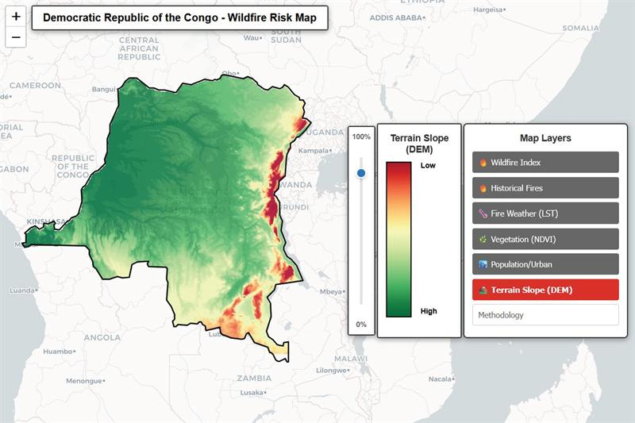

Wildfire Index of the Democratic Republic of the Congo is a spatial risk assessment project analyzing wildfire susceptibility across the country under current environmental and human-influenced conditions.
A wildfire index is a numerical indicator that estimates the likelihood of fires starting, spreading, and intensifying based on environmental drivers. The DRC Wildfire Index applies this concept through a composite risk model that quantifies wildfire vulnerability across the national territory.
The index integrates multiple environmental and anthropogenic factors—including historical fire frequency, land surface temperature (fire weather), vegetation condition, population density, and terrain slope—into a single normalized scale from 0 (low risk) to 1 (high risk). Each variable is weighted according to its relative influence on fire behavior: historical fires (25%), fire weather (25%), vegetation (20%), population density (15%), and terrain characteristics (15%).
Developed using a weighted linear combination methodology, the index provides a spatially explicit, data-driven framework for identifying areas most exposed to wildfire risk. It supports decision-makers, land managers, and emergency response agencies in prioritizing monitoring efforts, allocating resources, and designing targeted prevention strategies.
The project relies on freely available NASA Earth observation data, including MODIS satellite products and SRTM elevation models, processed with open-source geospatial tools to ensure transparency, reproducibility, and applicability in contexts such as the DRC, where limited ground-based monitoring infrastructure makes satellite-based analysis essential.

Click the image above to open the application in full screen.
(You will be redirected automatically in 30 seconds)